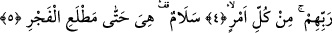

KADİR GECESİ,
BİN AYDAN HAYIRLIDIR.
Bismillâhirrahmânirrahîm
1. Biz onu (Kur’an’ı) Kadir gecesinde indirdik.
2. Kadir gecesinin ne olduğunu sen bilir misin?
3. Kadir gecesi, bin aydan hayırlıdır.
4. O gecede, Rablerinin izniyle melekler ve Ruh (Cebrâil), her iş için iner
dururlar.
5. O gece, esenlik doludur. Ta fecrin doğuşuna kadar.
Âyetteki “nun” azamet ifâde etmek, ya da sıfat ve isimlerle birlikte zâta delalet etmek
içindir. “Onu” şeklindeki zamir Kur’an yerine kullanılmıştır. Çünkü Kur’an’ın şöhreti,
isminin açıkça söylenmesi yerini tuttuğu için zamirle yetinilmiş, ismi açıkça
anılmamıştır. Sanki o, bütün herkesin zihninde, mevcuddur. Allah Kur’an’ın indirilişini
kendi zâtına isnâd ederek ta’zim etmektedir. Oysa Kur’an-ı Kerim Cebrâil vâsıtasıyla
indirilmiştir. Ayrıca “Biz” kelimesi getirilerek, bir başka ifâdeyle mânevî fâile öncelik
verilerek Kur’an-ı Kerim’e bir ta’zim yapılmıştır. Ne varki burada Allah zikredilmiş ve
onunla yetinilerek Cebrâil’den söz edilmemiştir.
Bazı tefsirlerde ifâde edildiğine göre âyetin mânâsı şöyledir: “Biz onu indirdik”
cümlesi başına mânâyı pekiştirmek için “inne” getirilmiştir. İfadede kolaylık olsun diye
zamirin bitiştirilmesi tercih edilmiştir.
Görüldüğü üzere âyet-i kerime mâzî sigasıyla “indirdik” şeklinde başlamaktadır.
Buna göre âyetin mânâsı şöyledir: “Kur’an’ı kadir gecesinde indirmeye Biz hükmettik.
Onu ezelde Biz takdir ettik.”
Burada şöyle bir soru hatıra gelebilir: “İnzal/indirme bir anda indirmede kullanılır.
Oysa Kur’an toptan bir anda indirilmemiş, tam tersine yirmiüç senede parça parça
indirilmiştir. Bu sûre de o indirilen sûrelerden birisidir. O halde nasıl olur da Kur’an
için inzal fiili kullanılır?” Bu soruya şöyle cevap vermek mümkündür: Kur’an’ın
indirilmesinden maksad Cebrâil’in Kadir gecesinde onu levh-i mahfuz’dan alıp dünyaya